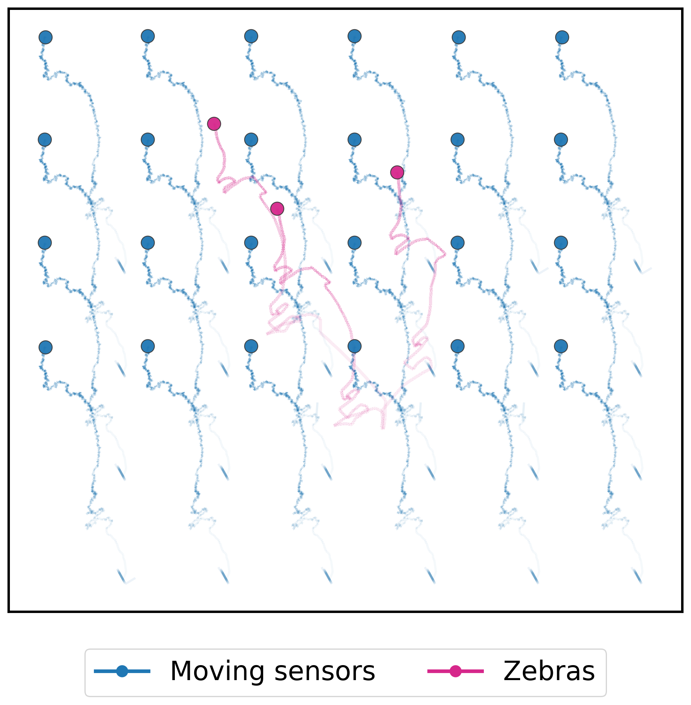
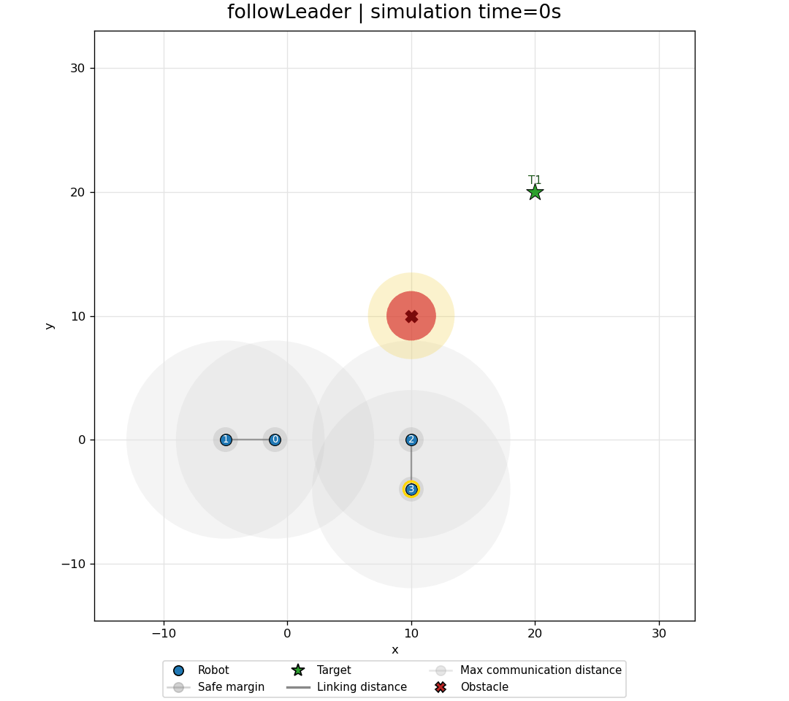

Advances in Collective Robotics Through Macro-Programming
Challenge


Collective Adaptive Systems are large-scale collectives of sensors, robots, and services that must stay adaptive while devices move, fail, and join at runtime.
Macro-programming raises collective behavior above single-device logic; Aggregate Computing provides composable abstractions for expressing situated collective behavior.
Aggregate Computing systems often remain isolated aggregate programs, while collective robotics needs runtime support to:
- add, remove, and manipulate collective processes at runtime;
- manage devices, users/groups, permissions, and signals;
- support overlapping processes across space and time;
- abstract heterogeneous devices while preserving their capabilities and constraints.
A middleware layer between aggregate programs and devices, where macro-programming mechanisms for consensus, monitoring, adaptation, and safety become reusable runtime capabilities.
Contributions
Each contribution turns one distributed mechanism into a reusable macro-programming capability for robot collectives.
Agreement over changing neighborhoods: stale contributions are pruned after failures and topology changes.

A first model of distributed resource management for adaptive collective robotics.

Observers fuse partial, noisy information into runtime estimates of the environment and the collective.



Robot teams repair task assignments after failures, new tasks, or changing conditions.

Current direction: embed CLF/CBF constraints in the aggregate-control loop for formal safety guarantees.

Direction
Missing: a runtime layer that composes multiple collective processes over heterogeneous, distributed devices.
- Collective processesManage multiple aggregate programs across space and time.
- Runtime servicesExpose consensus, coordination, monitoring, replanning, and resource management as COS capabilities.
- Heterogeneous devicesAbstract platforms, sensors, and actuators while preserving capabilities and constraints.
- Safety guaranteesIntegrate CLF/CBF constraints to support safe collective actuation.
Collective Operating Systems target domains where many heterogeneous devices must be coordinated as situated collective processes.